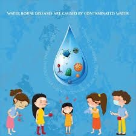
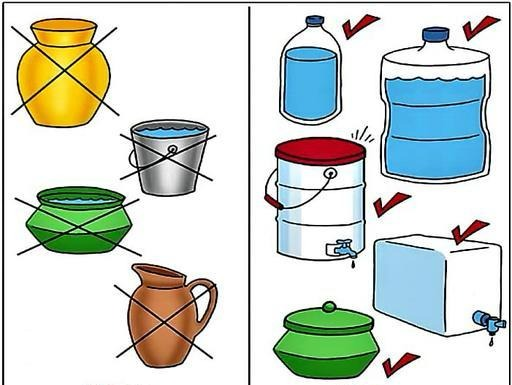
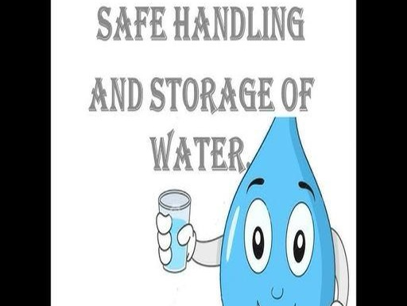
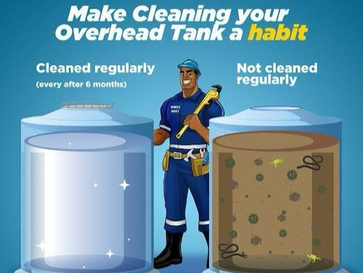

Empowering communities with water quality knowledge and solutions
Learn about the challenges millions face in accessing clean drinking water and how it affects communities worldwide.
Discover how unsafe water disproportionately affects children's health, education, and future opportunities.
Boiling is the most traditional method of purifying water. When water is boiled, it kills most types of disease-causing organisms.
Collect water from the cleanest possible source and filter it through a clean cloth to remove large particles.
Bring water to a rolling boil for at least 1 minute (3 minutes at altitudes above 6,500 feet).
Allow water to cool naturally and store in clean, covered containers.
Filtration systems remove impurities by physically blocking them while allowing clean water to pass through.
Select appropriate filter (ceramic, carbon, reverse osmosis, etc.) based on contaminants present.
Follow manufacturer instructions for installation and maintenance.
Clean and replace filter elements as recommended to ensure effectiveness.
Chlorine is effective against nearly all waterborne pathogens and is widely used in municipal water systems.
Determine the volume of water to be treated.
Add the appropriate amount of chlorine (typically 2-4 drops of household bleach per liter).
Stir and wait at least 30 minutes before drinking.
This is a chemical substance commonly used to purify water by removing suspended particles and impurities.
Add a small amount of alum to turbid water. Stir the mixture gently for a few minutes to dissolve the alum evenly.
Let the water sit undisturbed for 1-2 hours. The alum causes suspended particles to clump together and settle at the bottom.
Carefully pour the clear water from the top into another clean container, leaving the sediment behind.
Contaminated water can transmit diseases such as cholera, dysentery, typhoid, and polio. Diarrhea is the most widely known disease linked to contaminated food and water.
Repeated diarrhea and intestinal infections from unsafe water can lead to malnutrition, particularly in children, by reducing nutrient absorption.
Water contaminated with heavy metals (like arsenic or lead) or industrial chemicals can cause long-term health issues including cancer and neurological damage.
Diseases like schistosomiasis and guinea worm disease are spread through contact with contaminated water, causing chronic illness and disability.
Stagnant water provides breeding grounds for mosquitoes that transmit malaria, dengue fever, and other diseases.
Children exposed to contaminated water may suffer from stunted growth and cognitive impairments that affect their entire lives.

Drinking unsafe or contaminated water over a long period can affect your health in various ways:

Use food-grade containers with narrow mouths and tight-fitting lids to prevent contamination.

Always use a clean ladle or tap to remove water. Never dip hands or dirty objects into stored water.

Wash storage containers with soap and clean water at least once a week. For added safety, rinse with a chlorine solution.
Keep water containers in a cool, dark place away from chemicals and animals. Elevate containers to prevent contact with dirt or floodwater.
Watch this video to see proper water storage techniques in action and learn how to maintain water quality in your home.
Ask any question about water quality, purification, or health risks
Try asking:
Help us bring clean water to communities in need through education and practical solutions.